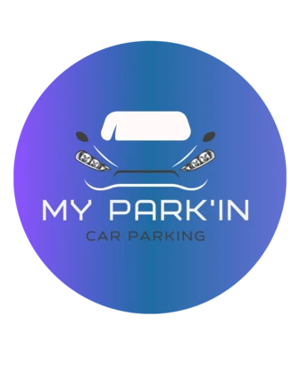
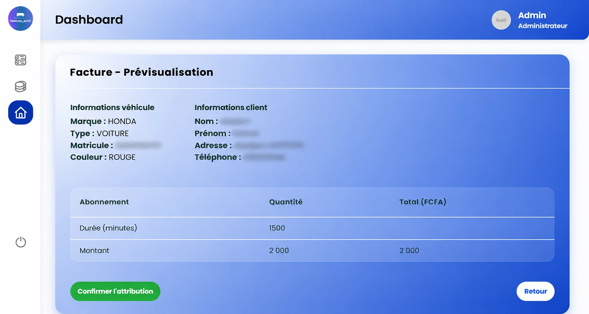
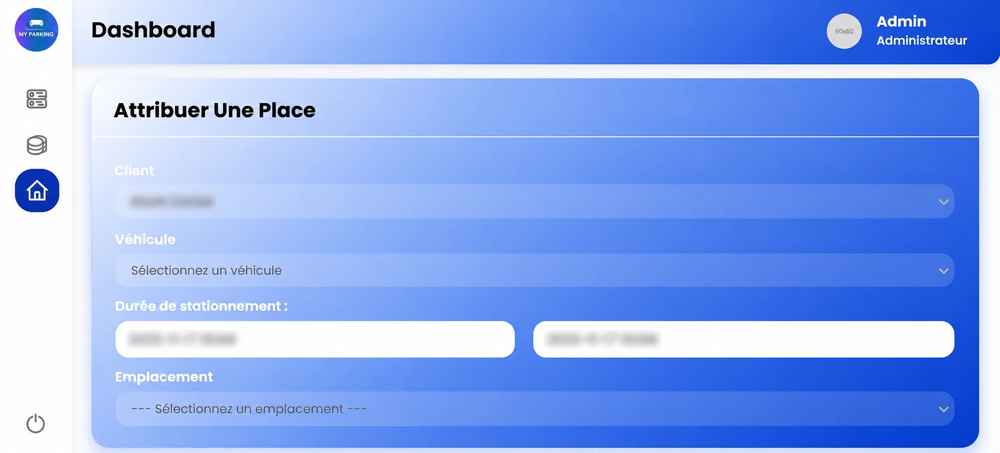
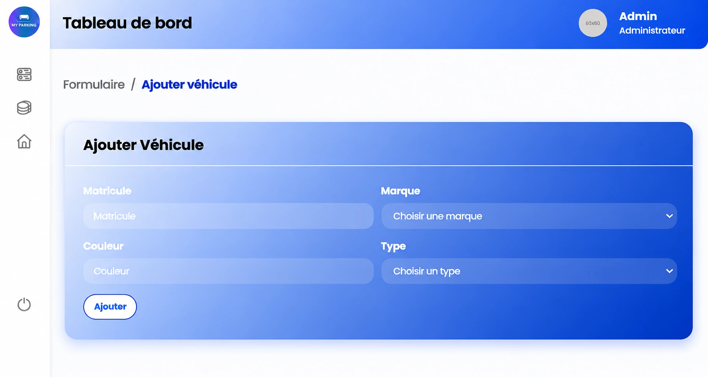

Emplacements
Création, activation, attribution, libération et suppression des places.
Une plateforme de gestion des places, des véhicules, des clients et des abonnements.

Le dépôt
Le dépôt public fourni contient trois espaces de travail : administrateur, gérant et client. Les routes couvrent la gestion des places, véhicules, clients, abonnements et factures PDF.
Cette page décrit ce que le code permet de vérifier. Votre rôle exact devra être ajouté avant de présenter Parking_auto comme une étude de cas personnelle complète.
Interfaces réelles
Captures de l'application Laravel fournies en novembre 2026, recadrées et optimisées en haute définition. Les informations personnelles, dates et matricules ont été floutés.



Fonctionnalités vérifiées dans le dépôt
Création, activation, attribution, libération et suppression des places.
Enregistrement des véhicules et association à un client ou une place.
Liste des abonnements, durée et réinitialisation administrative.
Prévisualisation et génération de factures PDF.